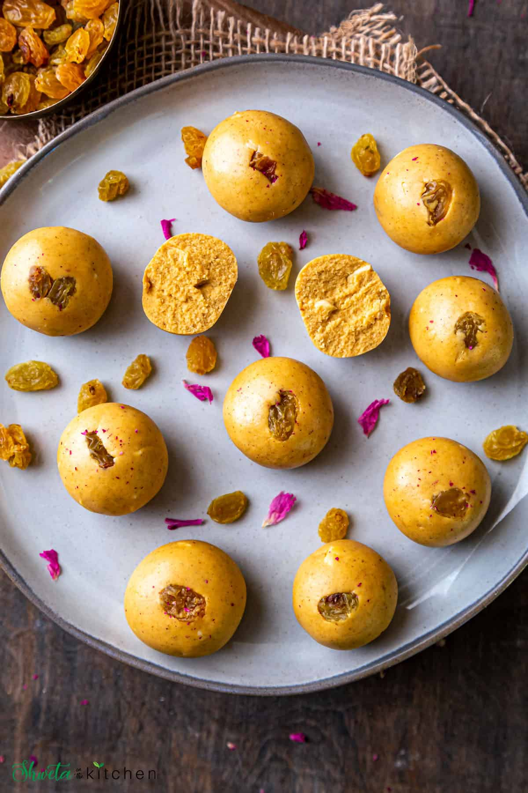

Tun Tun Mosi's Ladoo

Every desi kid's ultimate snack (atleast in their imagination). This is a proper mixture of what
a cartoon can do and what a kid can imagine.
Ingredients
- 1 Cup Besan/Gram Flour
- ¼ Cup Ghee
- ½ Cup Powdered Sugar
- ½ tsp Cardamom Powder
- 10 Raisins
- 1 Almond
Recipe
- Dry roast the besan on medium flame for about 10-15mins, keep stirring. Its raw taste should not be there.
- Add ghee and mix well.
- Cook the besan till fat separates for about 8-10 minutes and turn off the flame.
- Add sugar and cardamom powder. Mix well so that there are no lumps.. Let the mixture cool completely.
- Grease your hands with ghee and start forming ladoos. Make smooth and round ladoos. Decorate with a raisin.
- Serve or store in air tight container.